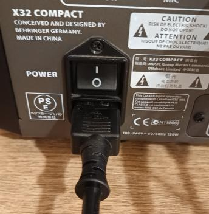
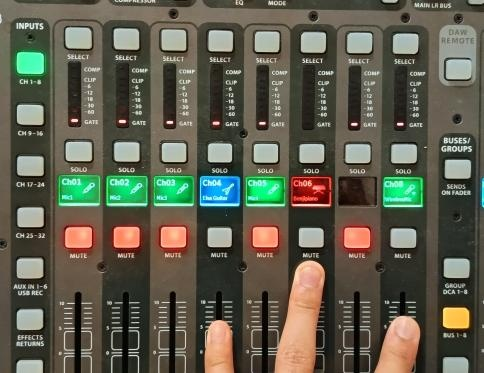
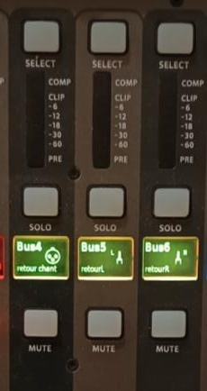
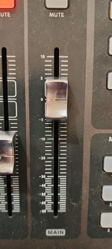

1
Mise sous tension
ALLUMER — Mettre sous tension la console
- Brancher l’alimentation sur la prise murale.
- Allumer la console avec le bouton d’alimentation situé à l’arrière.

Suivez rigoureusement chaque étape dans l'ordre chronologique. Cochez les étapes au fur et à mesure pour valider la mise en service du système audio.



* Micro connecté seul : celui-ci est branché sur le ch 8, repéré par la couleur verte.
* Groupe de 4 micros connectés : situé dans la partie AUX, on y accède grâce au bouton à gauche de la console, branché sur le AUX 1, repéré par la couleur verte.
